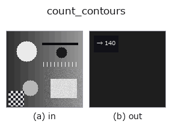

features op• Datenarten: contour → feature
• Aufruf: fullseye.apply(img, "count_contours", a=0.5, b=0.5) (das 2-D-Modell ist ein Bild plus zwei skalare Regler a,b∈[0,1])
• HALCON-Äquivalent: count_obj (Bedeutung und Parameter sind in der HALCON-Referenz nachzulesen)

*Die Abbildung ist die tatsächliche Ausgabe auf einer synthetischen 128×128-Eingabe. Links Eingabe, rechts Ausgabe. Punktwolken als Draufsicht-Streudiagramm (Helligkeit = z), 1-D-Reihen als Linie, Volumen als Maximum-Projektion entlang z, Videos als mittleres Bild, komplexe Bilder als Betrag; Rückgabewerte, die kein Bild ergeben, werden als Werte gezeigt.*
*Regler a ändert die Ausgabe nicht (gemessen: identisch bei 0,1 / 0,5 / 0,9).*
*Regler b ändert die Ausgabe nicht (gemessen: identisch bei 0,1 / 0,5 / 0,9).*
Stufen (die vorangehenden Ops → dieser Op, von links nach rechts):
▸ count_contours: Stufen (Doku-Website)
Ein Merkmal, das die Anzahl der Konturen (Objekte) zurückgibt. Entspricht HALCONs count_obj (Number of objects in a tuple.).
a, b werden nicht verwendet. Gibt lediglich die Länge der Konturliste zurück.
• Die Eingabe ist ein XLD-Kontur-dict {"shape": (H, W), "cs": [(N_i, 2), ...]}. Gezählt wird die Anzahl der Elemente von cs; Punktzahl, Länge und Geschlossenheit der einzelnen Konturen werden nicht betrachtet (auch eine Kontur mit 1 Punkt zählt als 1).
• Der Rückgabewert ist np.float64 (sort feature). Bei 0 Konturen 0.0.
• Der Wert hängt davon ab, wie die vorgelagerte Konturextraktion (sk_find_contours / edges_sub_pix / hx_gen_contours_skeleton) aufteilt - selbst bei gleicher Form erhöht eine Lücke von 1 Pixel die Anzahl. Um die Anzahl zu stabilisieren, select_contours (Auswahl nach Länge) oder hx_union_adjacent_contours dazwischenschalten.
• Als "Anzahl der Objekte" ist connection (Zusammenhangskomponenten einer region) + ein Äquivalent zu count_regions robuster gegen Lücken.
• Leitfaden zur Familie gallery2d_features
• Katalog der Beispieldaten (Download-URLs / Lizenzen) — 2-D nutzt skimage.data (BSD/Public Domain) plus synthetische Bilder, 3-D nennt Download-URLs echter Datenquellen (Stanford, PDS, …).
• Herkunft und Literatur der Operatoren — die Quellen der Forschung/Verfahren, auf denen diese Operatorfamilie beruht.
• Der kanonische Algorithmus (Autor, Jahr) und seine Anwendungen stehen im Familienleitfaden oben.
Das Programm unten ist nachweislich lauffähig (gleiche Eingabe wie die Abbildung). In der Studio-Hilfe wird dieser Block zu Schaltflächen, die es sofort laden und ausführen.
threshold 0.50 0.50 sk_find_contours 0.50 0.50 count_contours 0.50 0.50
▸ Diese Pipeline laden · Laden & ausführen
• gallery2d_features — py -3.11 examples/gallery2d_features.py
feature als Eingabe)features)effective_bit_depth · blob_count · area_frac · total_length · vol_count · sk_euler · sk_entropy_feat · sk_blur_effect
*Provenance: ops.py — 2D Operator-Registry. Diese Notiz wird von tools/opdocs.py md erzeugt (nicht von Hand bearbeiten).*
© 2026 Kazufumi Furuse — Fullseye operator documentation. Licensed under Apache-2.0.